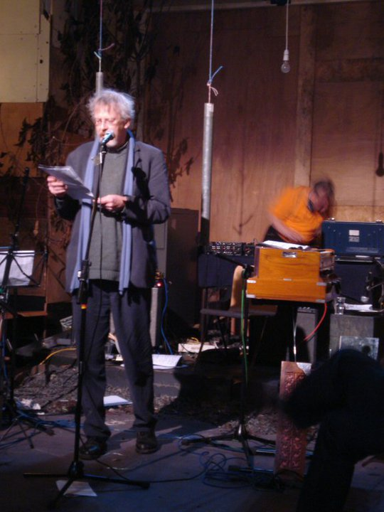

Saturday, November the 13th, 2010
back to: title, date or indexes
Here is a sound recording of what will come to be known as “the legendary Jellyfish session”, when Lepke B. and I performed at the now-demolished theatre in October. In the accompanying snap, Lepke is but an orange blur, but this is hardly surprising given the dizzying physical manoeuvres he adopts when plying his art. The voice you hear introducing us is the Benevolent Dictator of ResonanceFM, Ed Baxter (as featured in The Independent On Sunday Happy List 2009).
Listen here
